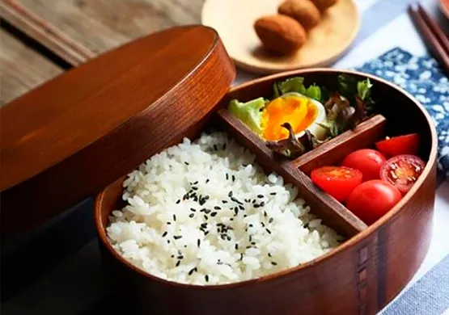

Что такое бенто?
Бенто - это японский ланч-бокс, в котором еда красиво разложена по секциям. Это не просто контейнер с обедом, а настоящее произведение искусства!

Традиционное бенто
Классическое бенто обычно содержит:
- Рис (часто с кунжутом или другими добавками)
- Белок (рыба, мясо или тофу)
- Маринованные овощи
- Свежие или приготовленные овощи
- Иногда фрукты или небольшой десерт
Мне нравится, как в бенто сочетаются разные цвета и текстуры еды.

Караибэн - веселые бенто
Караибэн - это бенто, оформленное в виде персонажей аниме, животных или других милых фигурок. Особенно популярны такие бенто для детей.
Если вы хотите попробовать готовить бенто:
- Начните с простого - рис, белковый продукт и овощи
- Используйте разные цвета для визуальной привлекательности
- Приобретите хороший контейнер с разделителями
- Не бойтесь экспериментировать!
Бенто - это прекрасный способ проявить творчество в готовке и заботиться о своем питании.